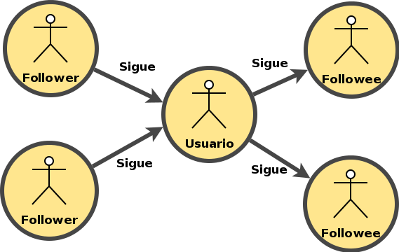
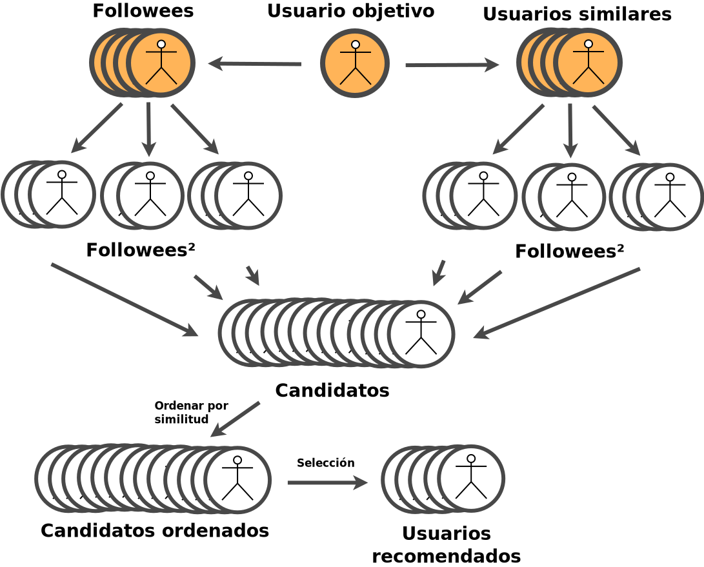
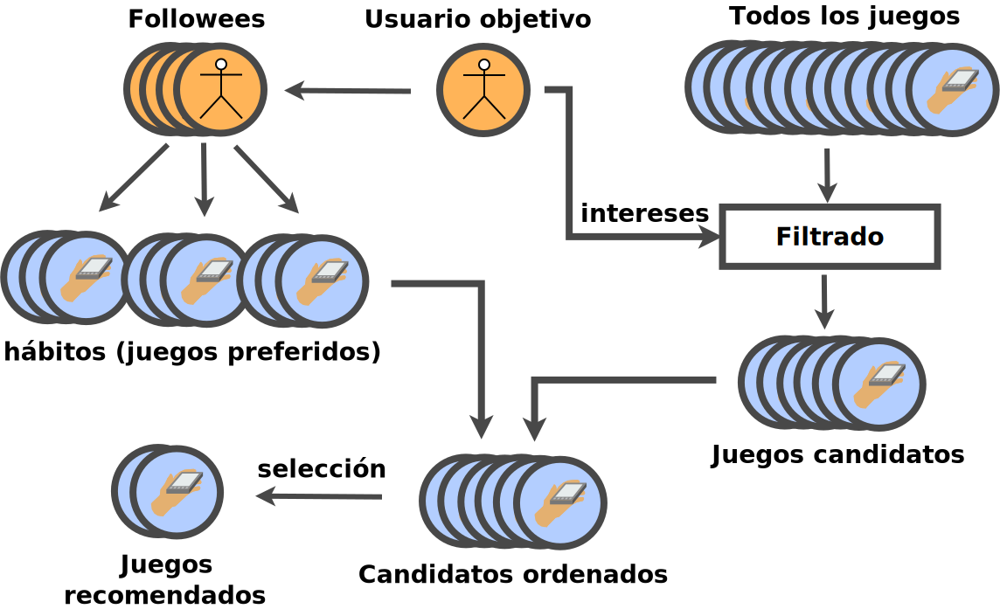

Entrenamiento
colaborativo
colaborativo
Objetivos de Breakbrain
- Construir una plataforma social destinada al entrenamiento de habilidades mentales mediante juegos.
- Permitir la personalización de los intereses de entrenamiento.
- Ofrecer estadísticas de seguimiento del entrenamiento.
- Permitir la integración de juegos de terceros.
- Desarrollar algunos juegos de ejemplo.
- Implementar un sistema de recomendación de usuarios y juegos.
Etapas de trabajo
-
Estudio del estado del arte
- Webs de minijuegos
- Tecnologías web
- Fisiología del cerebro humano
- Sistemas de recomendación
- Análisis de objetivos
- Desarrollo de BreakBrain

Entorno tecnológico
Tecnologías web
- HTML
- CSS
- JavaScript
Bibliotecas y módulos
- Socket.IO
- Express
- CreateJS
Entornos de desarrollo
- Emacs
- Chrome DevTools
Tecnologías del servidor
- NodeJS
- MongoDB
- Websockets
Pruebas
- NodeJS Assert
- Vows
Otros
- Amazon Web Services
- MongoLab
- Nodester
- Git

Relaciones sociales en BreakBrain
Recomendación de usuarios
Recomendación de juegos

- Se ha desarrollado una plataforma social para el entrenamiento cerebral mediante juegos.
- Se ha implementado un framework de desarrollo de juegos para la misma y se han creado algunos de ejemplo.
- La plataforma permite la integración de juegos de terceros.
- La plataforma permite la personalización del entrenamiento y ofrece estadísticas de seguimiento.
- Se ha implementado un sistema de recomendación de usuarios y juegos.
- Se han realizado pruebas con usuarios reales.
- Se ha liberado como un proyecto de software libre.
Logros académicos adicionales
- Conocer los estándares web modernos: HTML5, CSS3.
- Programación web de tiempo real.
- Programación JavaScript del lado del servidor (con NodeJS).
- Trabajar con MongoDB (base de datos NoSQL).
Propuestas de futuro
- Internacionalización de la interfaz de usuario.
- Ampliación del catálogo de juegos.
- Enriquecimiento de las relaciones sociales en la plataforma.
- Adaptación del diseño a dispositivos móviles.
- Construcción de una aplicación móvil.